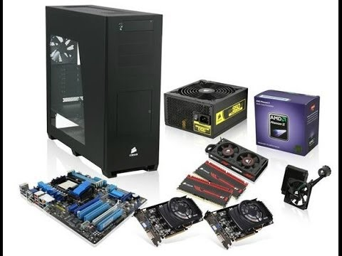

Технічні характеристики
Перед візитом до магазину раджу попередньо визначитися із технічними показниками комп'ютерів, - каже адміністратор магазину, - і зорієнтуватися із тими характеристиками, які влаштують саме вас. Крім того, порадьтеся чи попросіть знайомого, який розбирається у техніці, піти з вами до магазину. Адже купувати комп'ютер і не розбиратися у ньому - те саме, що купувати автівку, не маючи водійського посвідчення.
Оптимальні ціни на ноутбуки сьогодні варіюються у межах 3,5-5 тис. грн. (діагональ - 15,6 дюйма), непоганий нетбук можна придбати за 2,5 тис. гривень (діагоналлю близько 10 дюймів). Операційна система вже встановлена у комп'ютері і, як правило, входить у ціну.
- Процесор. Основна характеристика - це ядро. ЇЇ показник прямо пропорційно визначає швидкість роботи комп'ютера - чи швидко він зможе виконувати команди. Ігроманам краще вибирати комп'ютер із двоядерним процесором, адже ігри - одні з найвимогливіших завдань. Якщо ж плануєте працювати лише з офісними програмами, Інтернетом, то можна обійтися і одноядерним. Варто звернути увагу і на тактову частоту ядра. Середня частота одного ядра - 2,5 - 3,5 ГГц, для ігор краще обирати більше 3 ГГц. Ціни на процесори стартують від 600 гривень.
- Жорсткий диск. Однозначно - що більша пам'ять, кеш-пам'ять і вища швидкість - то краще. Сьогодні актуальний об'єм для ПК - це 1 тис. гігабайтів або 1 терабайт (близько 600 грн.), для ноутбука - 320-500 гігабайтів (600 - 750 грн.). Що вища його швидкість, то швидше можна виконувати завдання, наприклад, копіювати, переміщувати дані. Швидкість обміну даними сьогодні - близько 120 мегабайтів у секунду. У ноутбуків частоти зазвичай нижчі. Усе залежить від ціни: хочете грати у потужні ігри - купуйте дорогий ноутбук.
- Відеокарта. Це основний пристрій, від якого залежатиме, в які ігри зможете грати. Потужна відеокарта дозволить вам грати у сучасні ігри. Її основна характеристика - це обсяг пам'яті (оптимальний розмір - від 512 до 1 гігабайта).
- Оперативна пам'ять. Що вона більша, то з більшою кількістю програм зможете працювати одночасно. Для комфортної роботи офісних програм достатньо 512 мегабайтів. Якщо одночасно працюєте з "офісом", Інтернетом, медіапрогравачем, то оптимальний варіант - 1 гігабайт (близько 160 грн.) оперативної пам'яті. Для ігор - мінімум необхідно 2 гігабайти (280-300 гривень).
- CD, DVD приводи. Сьогодні CD приводи майже не побачиш. В комп'ютери встановлюють DVD-RW приводи. В середньому він обійдеться у 200 гривень.
- Монітор. Купуючи монітор, зазвичай звертають увагу на його діагональ. Щось порадити тут важко, адже кожен вибирає, з огляду на власні побажання та матеріальні можливості. Ціна на монітор залежить від діагоналі. "Бюджетний" комп'ютер - це зазвичай 19 дюймів (1000-1100 грн.). Середній клас моніторів - 20-22 дюйми (1200-1500 грн.). І ті, хто купують комп'ютер для ігор, надаює перевагу масштабнішим розмірам - наприклад, 24 дюйми (близько 1700 грн.). Крім діагоналі, звичайно, є й інші параметри, проте сьогодні майже всі вони певним чином стандартизовані, зокрема, переважна більшість комп'ютерів передає 16 млн. кольорів.
